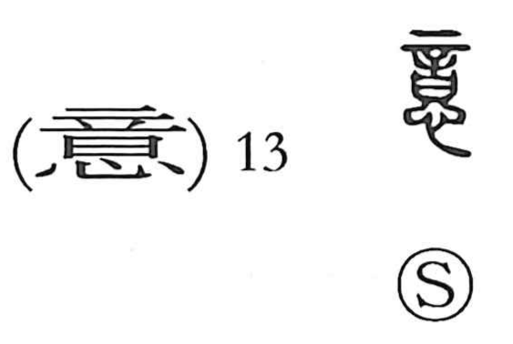

Explanation
意 is a compound of 音 and 心. In early ritual practice, petitioners placed 言—solemn prayer texts—before the altar; Shirakawa sees 言 as the tattooing needle 辛 set above a covenant vessel, a form that marks an oath whose falsity invites punishment, hence “words” addressed to the gods. The deity’s answer came as faint sounds in the night (音), which the human heart (心) listened to and inferred. Thus 意 originally means to weigh and divine the gods’ intention—to make an inference from sacred sounds. From this root it broadened to “think,” to fix one’s will, and to denote the heart/mind itself. Related graphs preserve the nuance of surmise: 憶 and 憶度 convey conjecture, 臆 a fearful kind of guessing, and 噫 the exclamation uttered when one is moved by a deity’s prompting.